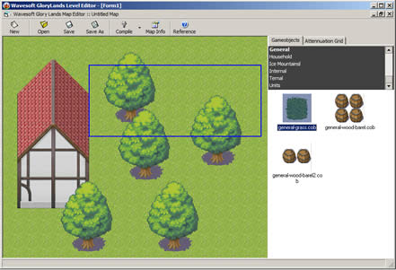

GloryLands Map Editor Tutorial
Introduction
This tutorial will help you understand the user interface and the tools that are available in order to create your map quickly and efficiently.
Setting up our map
The first step to start a new map is to create a new project file and set up it's background.
First, press the  button. A blank window appears:
button. A blank window appears:
| Fig.1 : A blank map |
Then click the  button and click the "Change" button on the "Appearence" section. A window pops up, displaying the available tilesets and their respective tiles. Select the one you want to use as background.
button and click the "Change" button on the "Appearence" section. A window pops up, displaying the available tilesets and their respective tiles. Select the one you want to use as background.
| Fig.2 : Selecting a map file from the map info dialog |
Immediately, the background of the form is filled with the tile you have selected. This tile will be used as your map's default background.
| Fig.3 : Out background is changed |
Placing Objects
Lets start designing our map now. Depending on the object you are about to place, MapEditor provides two ways of object importing: The resizable and the fixed mode. In fixed mode you can only select and place a specific object, without being able to change it's size. Those objects are usually trees, weapons, fountains, etc..
On our example we will initially use the "external-house1.cob" and the "external-tree.cob" files, which both are in fixed mode. First, click on the object you want to insert:
| Fig.4 : A blank map |
And then click or click and drag on the location you want to place the object. A red rectangle appears, that shows the area the object is about to occupy.
| Fig.5 : Placing a building |
| Fig.6 : Continuing placing objects |
Placing a resizable object is just like the above procedure, but here we also specify the item's width and height. Click on the object you want to place and then click on the map. That point will be the first corner of the object's rectangle. Then drag your mouse till all the required area is filled. While placing a resizable object, a blue rectangle appears (instead of the red one) meaning that you can resize your selection.
|  |
| Fig.7 : Placing a resizable object |
When you release your mouse, the object is placed. Note that each object you place is automatically sent to the highest layer and thus it hides the objects below it.
| Fig.8 : An object is placed above other objects |
If you want to send the object on the background, use the object's right-click dropdown menu: If you want you can track the objects currently being selected by holding down the CTRL key while moving your mouse. When you have found the object you want to modify, right click anywere on the map and select "Send to back"
|
|
| Fig.9 : Sending an object to background |
You can also perform various operations from this menu:
- Delete : Deletes the current object (You can also press the DEL button)
- Bring to Front : Moves the object on the topmost layer
- Send to Back : Moves the object on the bottom-most layer
- Change Z-Reference : Modify the item's Z pozition (Height)
- Properties : Show and modify object's properties
| Fig.10 : The dropdown menu |
| Fig.11 : After sending the object to the background |
Moving an object
You can also move an object into a different location, or even resize it. To do so, simply click on the object you want to move or resize. A yellow rectangle appears on the object's original location and a floating green rectangle follows your mouse. To drop the item to the new location, single click on the new position.
| Fig.12 : Moving an object |
You can resize an object, if you drag your mouse insted of just clicking to the new location:
| Fig.13 : Resizing an object |
Creating the Attennuation Grid
Even if your map seems completed, there is a major part missing: The Attennuation (or collision) grid. This grid contains all the information about the areas the player can or cannot visit. For example, on a map without A.G. the player can pass through walls, trees, buildings etc.
The collision grids consists of a second grid, over the Map Grid that holds a value between 0% and 100%. The bigger the value, the bigger the difficulty for a player to enter the tile. 0% means the player can freely enter the tile, where 100% means that it is impossible to enter it.
To design the Attennuation Grid, click on the  tab:
tab:
| Fig.14 : The Attennuation grid designer |
On our example, we must disallow access on the solid objects. Theese are the building and the trees. First, scroll the vertical Attennuation bar to the 100% (Or click the "Unable to enter" label) and then start clicking on the areas you want to apply this value:
| Fig.15 : Modifying attennuation |
Then, scroll the value to 5% and start clicking on the grass edges. That means that the user has 5% difficulty to enter those tiles.
| Fig.16 : Modifying attennuation |
Repeat the above step, applying 10% attennuation on the internal grass area. That means that the user has 10% difficulty to pass through those tiles.
| Fig.17 : Modifying attennuation |
Compiling the map
Once we have completed our map, we need to compile it in order to be readable by the GloryLands design engine. Hit the dropdown menu of the  button and select the file type you want to create
button and select the file type you want to create
- PHP Script generated map (PHP) : Generates a PHP file that designs this map using PHP script.
- Serialized PHP array format (CMP) : Creates a serialized result of the RAW array being processed by the design system of GloryLands engine.
- ASCII Packed map (AMP) : Creates a packed map file in ASCII format, including a dictionary in a separate .php file
- Chunk model serialized map (CMMP) : Creates an optimized format of the CMP file type. (This file is mostly used by the system)
|
|||
| Fig.18 : Compiling a project |